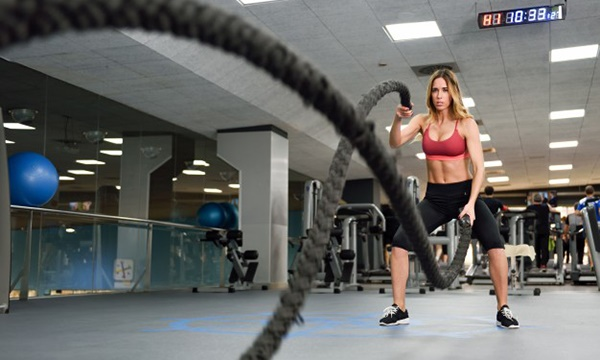

FONKSIYONEL
-
Ana Sayfa
Pilates
Fonksiyonel
Hakkımızda
Fonksiyonel egzersiz programı nedir?
Fonksiyonel egzersiz programı, insanın yaşamını sürdürebilmesi için yapması gereken hareketleri yapabilir durumda olmasını sağlayan spor çalışmaları demektir. İnsan vücudunun fonksiyonel olması ise hayatın içinde varlığını sürdürebilir şekilde hareke edebiliyor olması demektir. Kısaca itme, çekme, atlama, fırlatma, koşma, sıçrama, çökme vb. temel hareketleri yapması olarak da açıklayabiliriz.
NE İŞE YARAR?
Fonksiyonel antrenmanlar, vücudun işlevselliğini hedefleyen hareketlerden oluşan bir antrenman türüdür. Bu çalışmalar, tüm vücuda yönelik hareketleri kapsayan ve bunları arka arkaya yapmanıza yönelik, farklı yoğunlukta ve sürede tamamlanan programladır.
Bir fonksiyonel egzersiz programı; fırlatma, çekme, itme, kaldırma, çömelme, sıçrama hareketlerini değişik sıralarda, farklı sayılarda ve zorluklarda bir araya getirir. Zorluk seviyesi de kademeli olarak yükselen bu egzersiz programları sayesinde sporcular daha hızlı, daha esnek, daha dengeli ve daha dayanıklı hale gelir. Sporcunun kasları arasındaki uyum artar ve hareketler gittikçe daha koordinasyonlu olarak yapılır hale gelir ve tabii ki sakatlık riski de aynı oranda azalır.